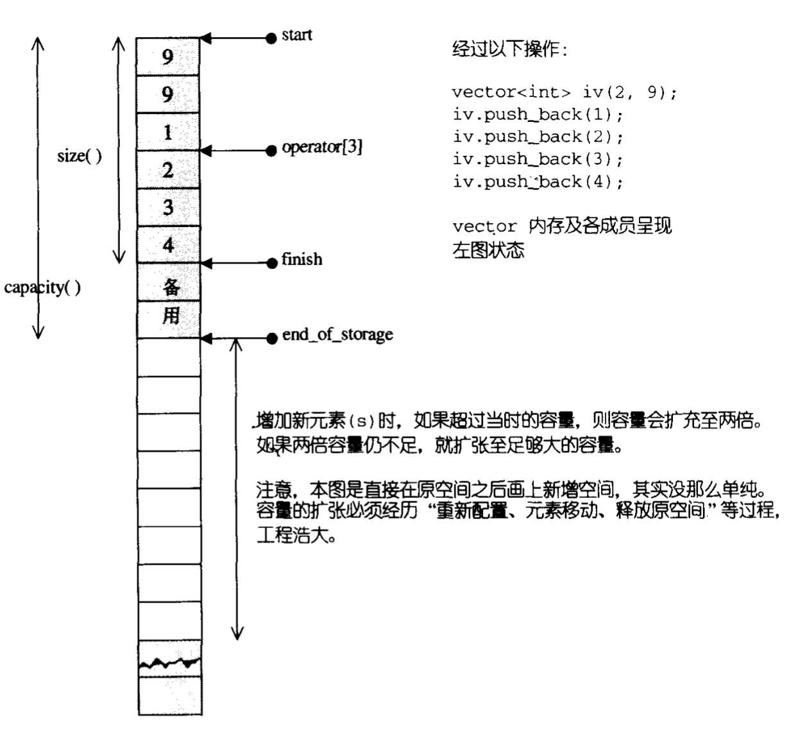

Vector 的数据安排以及操作方式，与 array 非常相似。两者的唯一差别在于空间的运用的灵活性。array 是静态空间，一旦配置了就不能改变，想要改变就需要客端自己实现配置新空间、将元素从旧空间搬到新空间、再把旧空间还给系统。vector 是动态空间，随着元素的加入，它的内部机制会自行扩充空间以容纳新元素。换句话说，vector 将复杂琐碎的操作替我们实现了。
1. vector 的迭代器
通过上一篇文章的介绍，我们了解了什么是迭代器 Iterator 、以及迭代器的种类和如何工作的。vector 维护的是一个连续的线性空间。普通指针天然的符合要求，所以，vector 提供的是 Random Access Iterator。
1
2
3
4
5
6
7
| template<class T, class Alloc = alloc>
class vector {
public:
typedef T value_type;
typedef value_type* iterator;
};
|
上面的源码很好的解释了我们平时写程序的时候，经常写的：vector<int>::iterator
2. vector 的数据结构
vector采用的数据结构非常简单：线性连续空间。用两个迭代器 start 和 finish 分别指向配置得来的连续空间中目前已经使用的范围，并以迭代器 end_of_storage 指向整块连续空间的尾端。
1
2
3
4
5
6
7
8
| template<class T, class Alloc = alloc>
class vector {
protected:
iterator start;
iterator finish;
iterator end_of_storage;
};
|

3. vector 的构造与内存管理
我们通过平时的程序来理解内存管理。
首先，vector 缺省使用 alloc 作为空间配置器
1
2
3
4
5
6
7
| template <class T, class Alloc = alloc>
class vector {
protected:
typedef simple_alloc<value_type, Alloc> data_allocator;
}
|
接下来看 vector 的构造函数
1
2
3
4
5
6
7
8
9
10
11
12
13
14
| vector(size_type n, const T& value) { fill_initialize(n, value); }
void fill_initialize(size_type n, cosnt T& value) {
start = allocate_and_fill(n, value);
finish = start + n;
end_of_storage = finish;
}
iterator allocate_and_fill(size_type n, const T& x) {
iterator result = data_allocator::allocate(n);
uninitialized_fill_n(result, n, x);
return result;
}
|
我们构造好一个 vector 之后，往往会使用 push_back(x) 来添加新的元素。这时会检查是否还有备用空间，如果有就直接在备用空间上构造元素，并调整 finish 的位置。如果没有备用空间，就需要扩充空间。
1
2
3
4
5
6
7
8
9
10
11
12
13
14
15
16
17
18
19
20
21
22
23
24
25
26
27
28
29
30
31
32
33
34
35
36
37
38
39
40
41
42
43
44
45
46
47
48
49
50
51
| void push_back(const T& x) {
if (finish != end_of_storage) {
construct(finish, x);
++finish;
} else {
insert_aux(end(), x);
}
}
template <class T, class Alloc>
void vector<T, Alloc>::insert_aux(iterator position, const T& x) {
if (finish != end_of_storage) {
construct(finish, *(finish - 1));
++finish;
T x_copy = x;
copy_backward(position, finish - 2, finish - 1);
*position = x_copy;
} else {
const size_type old_size = size();
const size_type len = old_size != 0 ? 2*old_size : 1;
iterator new_start = data_allocator::allocate(len);
iterator new_finish = new_start;
try {
new_finish = uninitialized_copy(start, position, new_start);
construct(new_finish, x);
++new_finish;
new_finish = uninitialized_copy(position, finish, new_finish);
} catch(...) {
destroy(new_start, new_finish);
data_allocator::deallocate(new_start, len);
throw;
}
}
destroy(begin(), end());
deallocate();
start = new_start;
finish = new_finish;
end_of_stroage = new_start + len;
}
|
注意，所谓动态增加大小，并不是在原空间之后持续新空间（因为无法保证原空间之后尚有供配置的空间），而是以原大小的两倍另外配置一块较大空间，然后将原内容拷贝过来，然后才开始在原内容之后构造新元素，并释放空间。因此，对 vector 的任何操作，一旦引起空间重新配置，指向原 vector 的所有迭代器就都失效了。